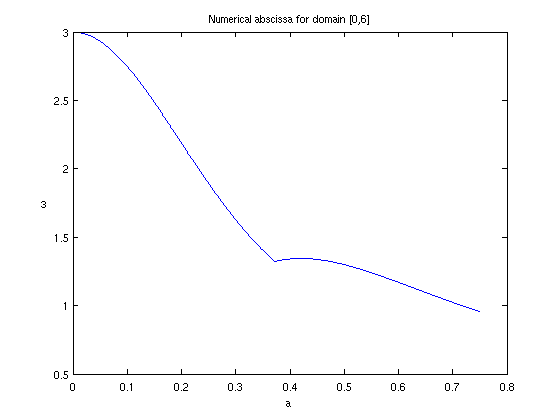
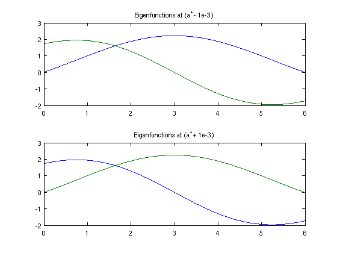

Abscissa of the linearized Vlasov-Poisson operator
Toby Driscoll, 20 October 2010
(Chebfun example integro/VlasovPoisson.m)
A Volterra integral operator A takes the form
(Au)(t) = int_0^t [K(s,t) u(s) ds]
for a specified kernel function K. As an example, the kernel function
K(s,t) = [1-a^2 (s-t)^2] exp [ -a^2 (s-t)^2/2 ]
arises in the linearization of the Vlasov-Poisson equation of plasma physics [1]. An application is to find the numerical abscissa of A; that is, the maximum eigenvalue of the compact operator B=(A+A')/2, where A' is the adjoint of A. The positivity of this quantity may give some indication of nonmodal transient growth of perturbations in equilibrium plasmas [1,2].
For a piecewise smooth kernel, the VOLT function can produce the original operator A directly:
d = domain(0,6); a = 1; K = @(s,t) (1-(a*(t-s)).^2) .* exp(-0.5*a^2*(t-s).^2 ); A = volt(K,d);
Chebfun does not currently have a facility for finding the adjoint of a linear operator. For a Volterra operator, however, the adjoint can again be written in terms of integral operators using the kernel K. In this case, the symmetry property K(s,t)=K(t,s) simplifies things even further, and B is just the Fredholm variant of A. So we can use FRED:
B = 0.5*fred(K,d);
The following lines create a function to return the numerical abscissa given a value for a.
d = domain(0,6); K = @(s,t,a) (1-(a*(t-s)).^2) .* exp(-0.5*a^2*(t-s).^2 ); B = @(a) 0.5*fred(@(s,t) K(s,t,a),d); % (A+A')/2 for any A numabs = @(a) eigs(B(a),1,'lr'); % e.v. with max real part
It's easy to show that for a=0, the numerical absicssa is T/2 on the domain [0,T].
numabs(0)
ans = 3.000000000000000
Here we compute a chebfun to represent the numerical abscissa over an interval for a.
tic omega = chebfun( numabs, [0,0.75], 'vectorize','resampling',false,'splitting',true) toc clf, set(gcf,'defaultlinelinewidth',1.5) plot(omega), title('Numerical abscissa for domain [0,6]') xlabel('a'), ylabel('\omega')
omega =
chebfun column (2 smooth pieces)
interval length endpoint values
[ 0, 0.37] 25 3 1.3
[ 0.37, 0.75] 19 1.3 0.96
Total length = 44 vertical scale = 3.1
Elapsed time is 20.618396 seconds.
 Chebfun has detected a breakpoint where this function is not smooth. (This is why the 'splitting' option was set to true in the construction). The breakpoint is located at
astar = omega.ends(2)
astar = 0.372516885964551
Presumably the breakpoint represents an eigenvalue crossing. We can check this conjecture by looking at the eigenfunctions on either side of the breakpoint.
[Vm,Dm] = eigs(B(astar-1e-3),2,'lr'); [Vp,Dp] = eigs(B(astar+1e-3),2,'lr'); clf, subplot(2,1,1), plot(Vm/Vm(1,1)), title('Eigenfunctions at (a^* - 1e-3)') subplot(2,1,2), plot(Vp/Vp(1,2)), title('Eigenfunctions at (a^* + 1e-3)')
Note that while the eigenfunctions themselves vary smoothly with the parameter, the color scheme changes in the two plots! This indicates that the role of leading eigenfunction (blue) has passed from one to the other.
References:
[1] J. J. Podesta, Transient growth in stable linearized Vlasov-Maxwell plasmas, preprint.
[2] E. Camporeale, D. Burgess, and T. Passot, Transient growth in stable collisionless plasma, Phys. Plasmas 16, 030703 (2009).
Acknowledgement: The author is indebted to John Podesta for bringing this application and operator to his attention.